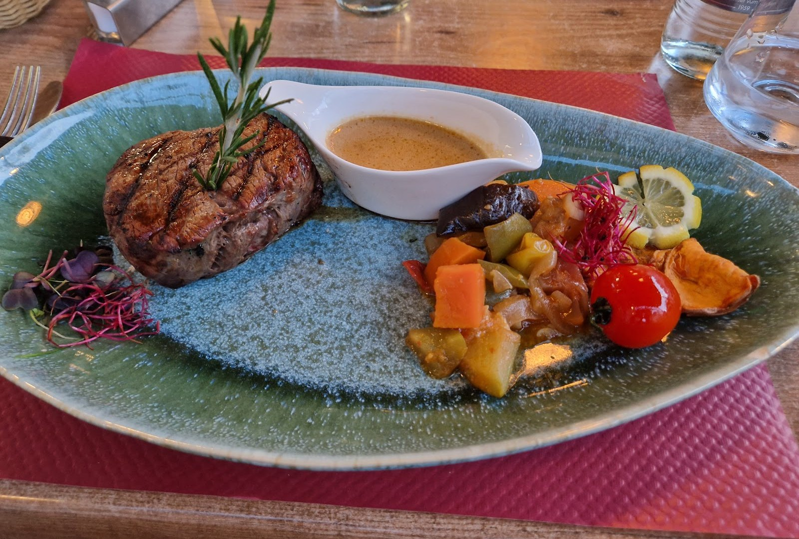
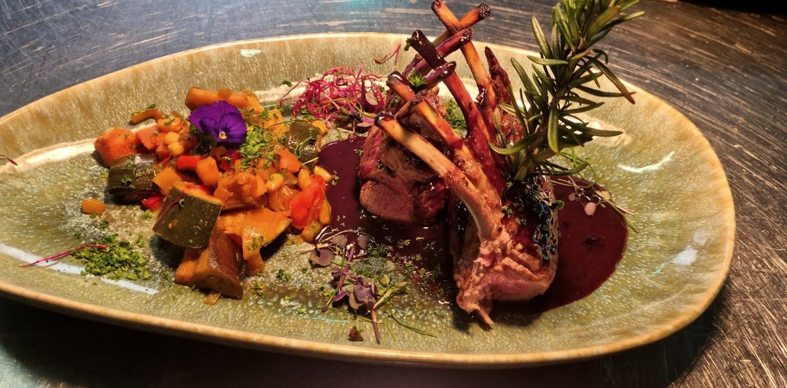
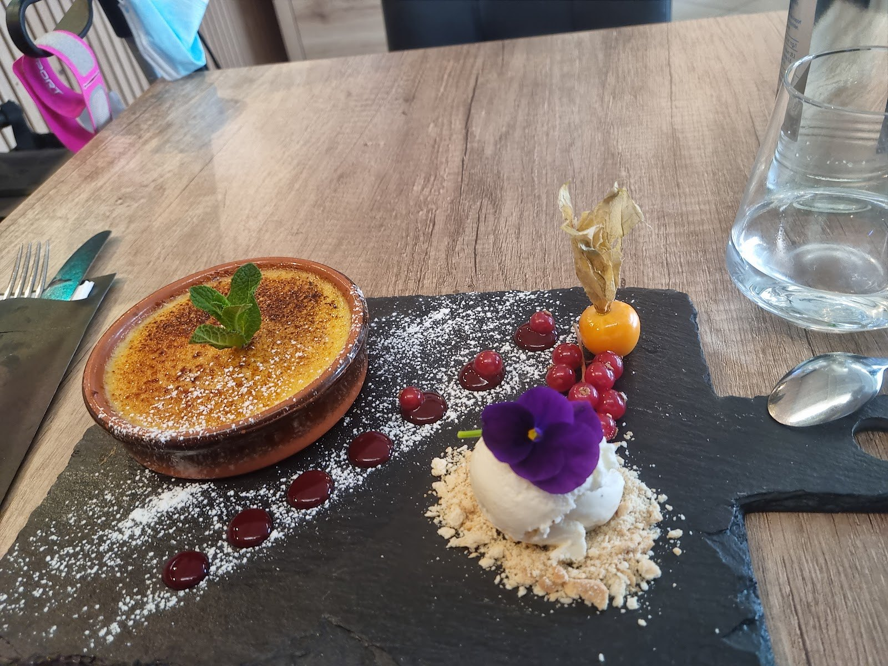
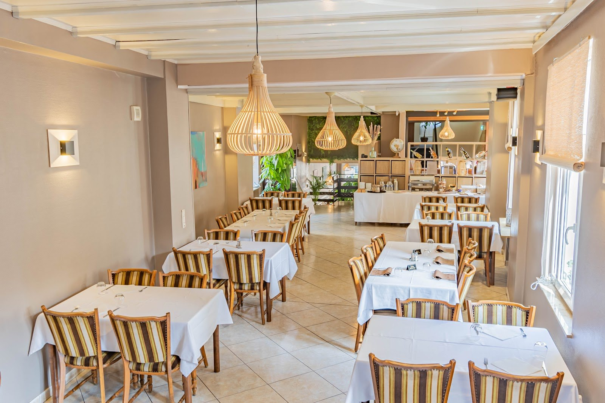
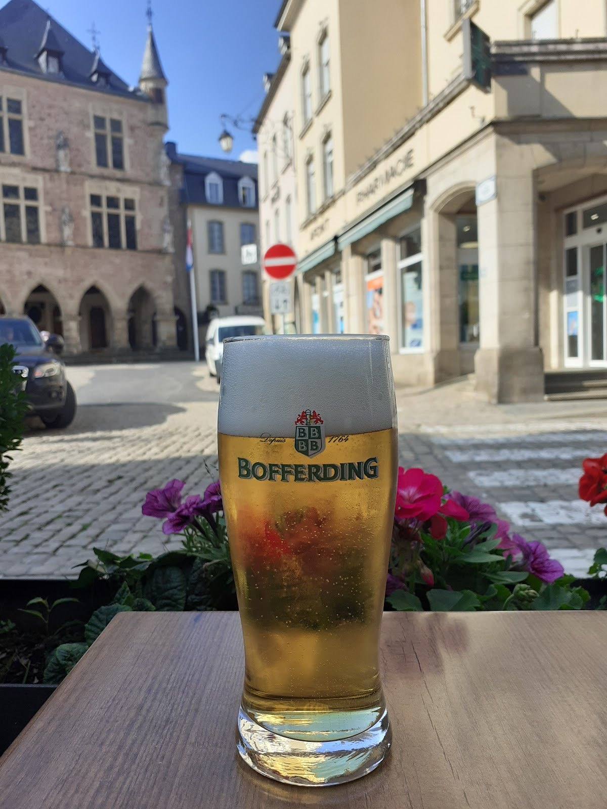
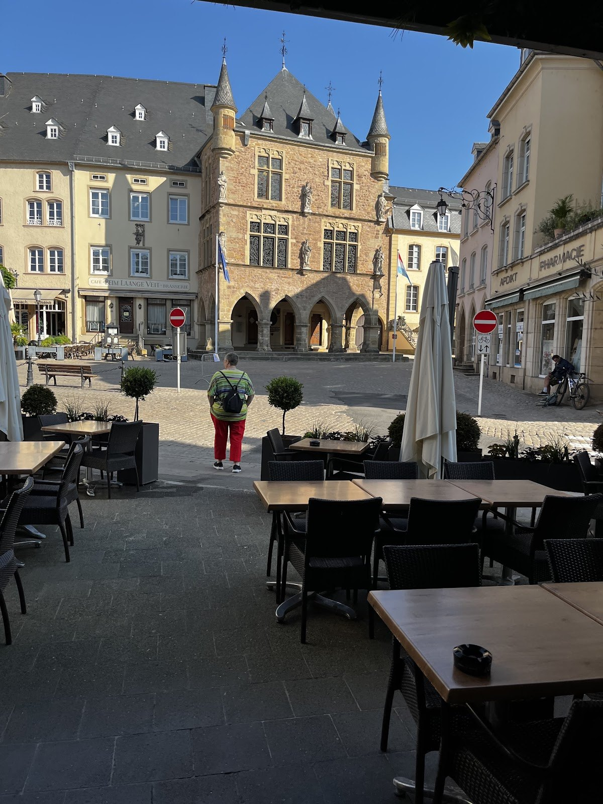
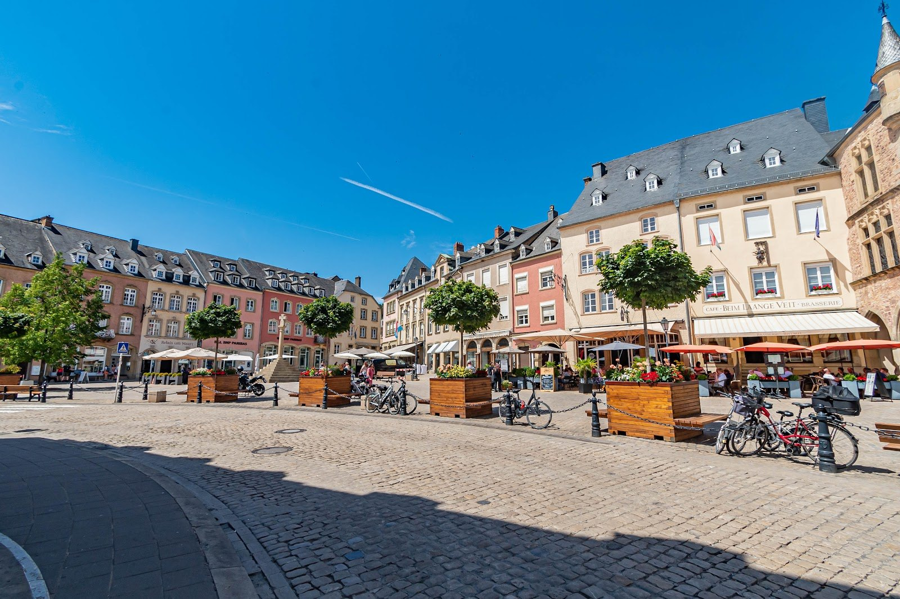

Hôtel – Café – Restaurant
Le Petit Poète
À la table du poète, sur la place du Marché d'Echternach, la plus vieille ville du pays.
La cuisine
Non-stopde 12h à 22h
Le lieu
13, place du MarchéEchternach, avec terrasse
La maison
Hôtel – Café – Restaurantà deux pas de l'abbaye
La table
La brasserie,sur la place du Marché.
Cordon bleu, bouchée à la reine, rognons de veau à la moutarde, francesinha, côtes d'agneau grillées, maminha de black angus.
Hôtel, café et restaurant sous un même toit, avec terrasse sur la place du Marché. Cuisine non-stop de 12h à 22h.

Photos
À table







Le lieu
Au cœurd'Echternach.
Le Petit Poète est sur la place du Marché de la plus vieille ville du Luxembourg — à deux pas de l'abbaye bénédictine et de la basilique, aux portes du Mullerthal, la « Petite Suisse » luxembourgeoise.

La brasserie
La carte
Plats de brasserie et viandes, avec accompagnement et sauce au choix.
Les classiques de brasserie
Escalope de volaille panée
Cordon bleu de volaille
Sauce champignons
Bouchée à la reine
Francesinha
Rognons de veau à la moutarde
Les viandes
Spareribs sauce barbecue
Côtes d'agneau grillées
Filet de bœuf (Argentine)
Maminha de bœuf black angus
Cuit à basse température
Les à-côtés
Au choix, avec les viandes
Gratin dauphinois ou frites
Sauces
Poivre, champignons, maître d'hôtel, vin rouge, béarnaise
Infos & accès
Nous trouver
Adresse